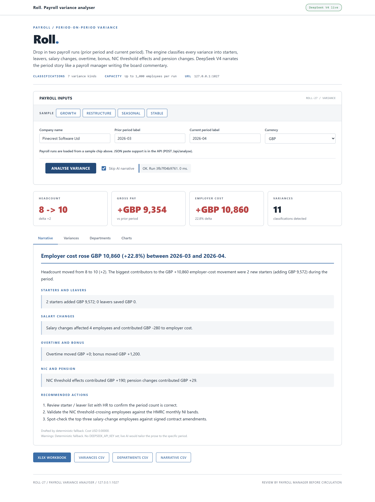
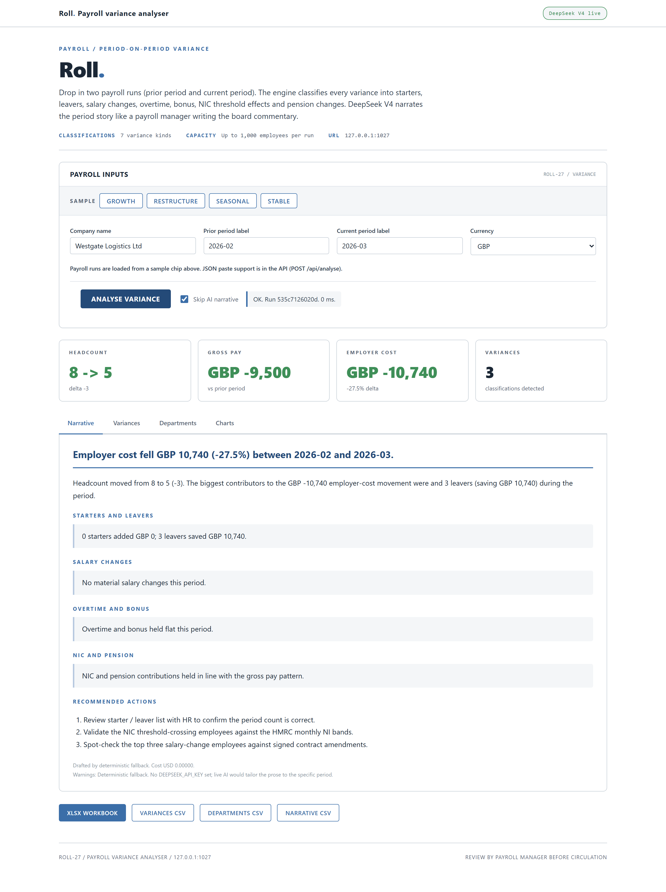
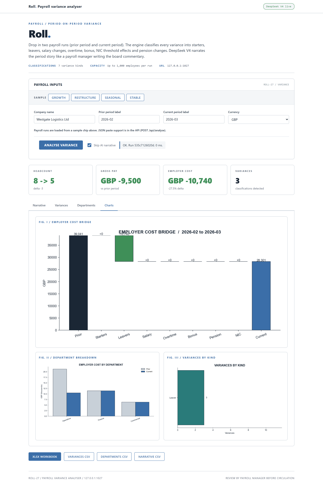

DAY 27 OF 30
Roll.
Payroll variance analyser
About the project
Classify every period-on-period variance into starters, leavers, salary changes, overtime, bonus, NIC effects, pension changes. AI narrates the period story.
A local Flask app and CLI that compares two payroll runs and classifies every variance into named categories: starters, leavers, salary changes, overtime, bonus, NIC threshold effects, pension changes. DeepSeek V4 narrates the period story.
At a glance
- Use case
- Monthly payroll variance reconciliation, finance to HR handover
- Inputs
- Two payroll run exports (employees, gross, NI, pension, tax, net, dept, role)
- Outputs
- Classified variances + department rollup + Excel + 3 CSVs
- Model
- Single DeepSeek call (~$0.0003 per month)
How it works
- Schema. payroll_schema.py validates two runs of up to 1,000 employees each, with unique employee IDs per run.
- Variance engine. payroll_engine.compute classifies every variance: new_starter (in current, not in prior), leaver (in prior, not in current), salary_change (matched employee with base-pay delta...
- AI narrative. payroll_ai.narrative builds a pipe-delimited digest of the totals, the variance breakdown by kind, the top ten variances by absolute impact, and the department rollup.
- HR-corporate UI. Distinct from every prior day's palette.
- Excel + CSV exports. openpyxl writes the multi-sheet workbook (Summary with embedded charts, Variances colour-coded by kind, Departments rollup, Narrative typeset, Inputs).
AI integration
DeepSeek narrates the variance bridge
Limitations
- UK PAYE / NIC convention. International payroll mappings (US 401k, French URSSAF, German Lohnsteuer) are post-30.
- No HR system integration. Upload only.
- Fixed variance thresholds. 0.5% on base pay, 2pp on NIC ratio.
- AI proposes; payroll manager disposes. Every narrative needs payroll-manager review before circulation.
- No headcount FTE conversion. Part-time vs full-time normalisation is post-30.
Fun facts
- It explains why this month's payroll differs from last, splitting the change into starters, leavers, pay rises, overtime, bonuses and pension effects.
- It is called 'Roll.' and every penny of the movement is accounted for.
Walk-through
- Home page (cold start) - HR / payroll corporate aesthetic. Clean blue-grey on white, sans-serif body, like a Workday or ADP product screen.
- First data run: tech scale-up - Growth sample.
- Second data run: mid-cap restructure - Restructure sample. Westgate Logistics with three leavers in operations (manager and two drivers).
- Figures tab (what the Excel export embeds) - Three charts on a white background: employer cost bridge (waterfall), department breakdown (grouped bars), variances by...
- AI narrative (the integration) - DeepSeek V4 reads the variance digest and writes the four-block narrative: headline, summary, four driver blocks...
Screenshots




PORTFOLIO. / DAY 27
SAFWAN / 30 DAYS OF FINANCE + AI